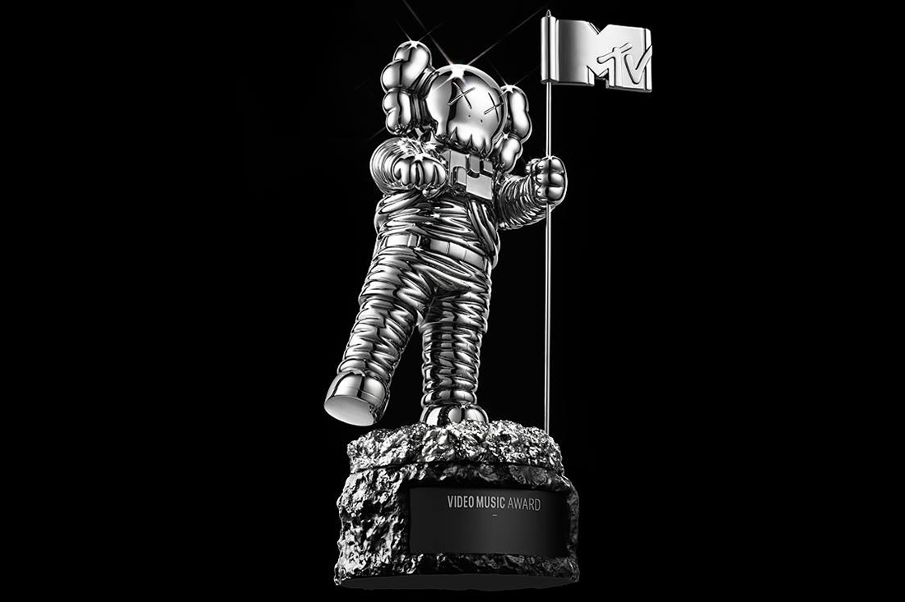
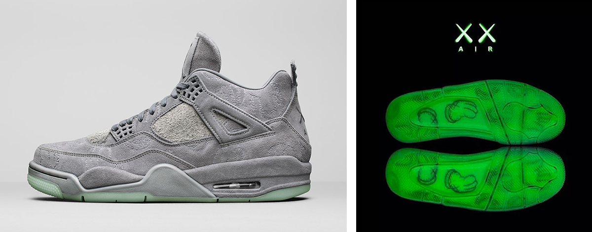
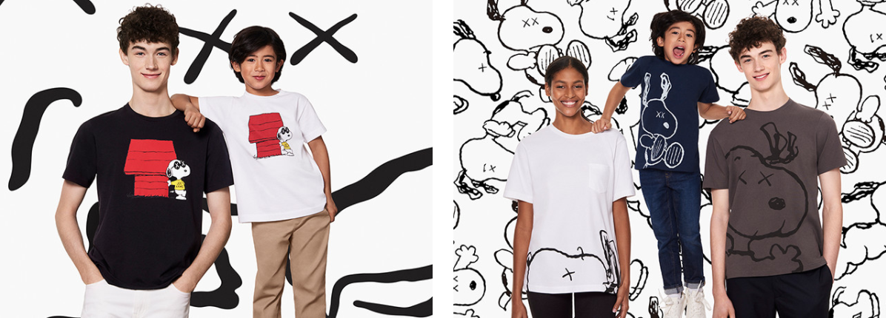

KAWS
– нью-йоркский художник и дизайнер лимитированной серии игрушек и одежды.
KAWS, урожденный Брайан Доннелли, родился в 1974 году в Нью-Джерси. Получил образование иллюстратора в Школе визуальных искусств (SVA) в Нью-Йорке. После выпуска в 1996 году работал в Disney в качестве аниматора-фрилансера, занимаясь проработкой задних планов мультфильма 101 далматинец и мультсериала Doug.
Параллельно с работой в Disney KAWS начал развиваться как граффити-райтер и сконцентрировался на творчестве в условиях города. Используя городские объекты – телефонные будки, общественный транспорт, рекламные щиты – в качестве холста, он заменял лица моделей на символические черепа с характерными крестиками вместо глаз. К слову, это даже не крестики, а буква «Х», которую KAWS особо выделяет среди всех прочих.
В 1999-м году началось сотрудничество KAWS с японским брендом одежды Bounty Hunter. Bounty Hunter – прекрасный пример того, как японские бренды подходят к американской культуре, фильтруют и перерабатывают ее со своей уникальной точки зрения, выдавая в итоге действительно оригинальный продукт.
В 1995-м компания Bounty Hunter началась как компания Harajuku по производству игрушек. Только достигнув успеха, основатель Хикару Иванага расширил ассортимент толстовками, футболками и другими вещами.
Концепт при этом остался неизменным: что же происходит, когда дети подаются в панк? Здесь – синтез нескольких популярных американских культур: панк, рокабилли, байкерское движение. Стильная и модная одежда Bounty Hunter мгновенно обросла поклонниками.
Именно для Bounty Hunter KAWS придумал и выпустил свою первую виниловую фигурку. Вышедшая ограниченным тиражом, она стала хитом сообщества любителей оригинальных арт-игрушек.
.jpg)
Первые фигурги KAWS x Bounty Hunter Companion (1999)
.jpg)
Chum (2002)
KAWS SHARE & KAWS TAKE
Помимо Bounty Hunter KAWS успел также поработать с такими японскими компаниями, как Santastic, A Bathing Ape, Medicom. В 2006-м в токийском районе Аояма открылся OriginalFake, совместный с Medicom магазин игрушек и одежды. Спустя практически семь лет феноменального успеха на сцене уличной моды, в конце мая 2013-го года KAWS и Medicom закрыли совместный бренд.
MTV and KANYE WEST
В 2013-м компания Брайана занялась редизайном символики MTV Video Music Awards, разработала некоторые обложки The New Yorker, Clark Magazine и I-D, а также обложки альбомов таких исполнителей, как Towa Tei, Cherie, Clipse и Kanye West.
В последние нескольких десятилетий MTV перестал быть просто телеканалом. Он стал настоящим культом, с присущими ему символами и атрибутами. Один из них — статуэтка VMA Moonman в виде миниатюрного космонавта. В 2013 году, не желая перечеркивать историю, стоящую за плечами этого малыша, KAWS осторожно модифицировал дизайн статуэтки, придав ей сходство с одним из своих самых знаменитых фирменных персонажей.
Обложка альбома Канье Уэста «808s & Heartbreaks», созданная KAWS
Статуэтка VMA Moonman
«Girl»
KAWS создал дизайн лимитированных бутылок для Dos Equis и Hennesy, работал над совместными проектами с Burton, Nike, Vans, Supreme и DC Shoes, разрабатывал дизайны для Gallery 1950 и Kiehl’s Cosmetics.
В 2014-м KAWS со своим давним другом Фарреллом Уильямсом работал над бутылкой и дизайном парфюма «Girl», созданного Уильямсом вместе с Comme des Garcons, чтобы отпраздновать его одноименный сольный альбом. В 2016-м Брайан также поработал с магазином одежды Uniqlo, и выпустил свою линию футболок и аксессуаров, практически мгновенно распроданных по низким ценам. За счет высокого спроса коллекция возобновлялась несколько раз.
NIKE И JORDAN
В 2007 году Nike, заинтересовавшись молодым, но уже прославленным художником, пригласили Брайана для работы над совместным релизом. Основой послужила модель Nike Air Max 90 и Nike Air Force 1, преобразившаяся в руках художника и ставшая похожей на одного из его персонажей с глазами-крестиками. Спустя почти 10 лет тандем повторил успех, выпустив совместное издание Air Jordan VI, которое на данный момент оценивается на вторичном рынке в сумму от 1400 до 2000 долларов.
UNIQLO
Несмотря на весьма бюджетную ценовую политику и массовое позиционирование, бренд Uniqlo успел прославиться несколькими громкими коллаборациями, в числе которых – совместная коллекция с KAWS по мотивам мультфильма “Peanuts”. Художник не ограничился простыми футболками с принтами, представив также свитшоты, домашние тапочки и мягкие игрушки, в которых явно прослеживается фирменный элемент KAWS’а – знаменитые иксы на месте глаз.
.jpeg)
Nike Air Force 1 x KAWS, 2007 год
Air Jordan VI в исполнении KAWS
UNIQLO & KAWS
Искусство Kaws
В акриловых рисунках и скульптурах KAWS много повторяющихся мотивов, которые и сделали его работы узнаваемыми с первого взгляда. Он умело использует отдельные фрагменты, понятные каждому, независимо от региона, языка или культурного бэкграунда.
Яркий тому пример – одна из ранних серий 2000-х годов, The Kimpsons, напрямую связанная с Симпсонами, как с феноменом, давно и основательно влившимся в жизнь людей по всему миру. По тому же принципу KAWS использовал и другие популярные образы: Микки Мауса, Спанч Боба, смурфиков. Естественно, это молниеносно привлекло к нему внимание.
О коммерческом успехе говорит уже тот факт, что скульптура «Wonderful World» была продана за 400 тысяч долларов.

Работа Seated Companion, которую продали на аукционе в Гонконге за 321,000 $
.jpg)
UNTITLED (KIMPSONS #1) (2004)
.jpeg)